|
Assel Kembay I am a PhD candidate in the Neuromorphic Computing Group at the University of California, Santa Cruz, advised by Prof. Jason Eshraghian. Before joining UCSC, I received my M.S. degree from the Korea Institute of Science and Technology (KIST). My research focuses on lifelong adaptability of AI systems in dynamic real-world environments: knowledge distillation through space and time, continual learning, and efficient sequence modeling with neuromorphic architectures. |
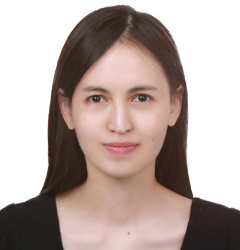 |
{kind=link}
|
Research experience at Conscium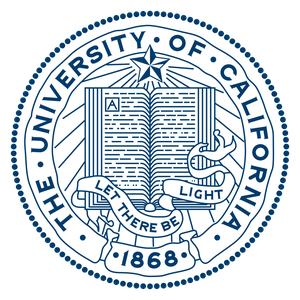 UC Santa Cruz
|
News |
| Aug 2026 | Cross-User Adaptation for sEMG Gesture Recognition via Continual Learning accepted at IEEE BioCAS 2026 (Incheon, Korea). |
| Aug 2026 | Awarded a 2026 IEEE Circuits and Systems Society (CASS) Student Travel Grant for APCCAS 2026 (Fukuoka, Japan). |
| Jul 2026 | Officially advanced to PhD Candidacy! |
| Jul 2026 | Three papers accepted: Complex-Pole Dynamics in Transformer Value Paths at APCCAS 2026 (Oral), Sensing with Spikes at IROS 2026, and Training SNNs Using Lessons from SSMs at WCCI IJCNN 2026. |
| Feb 2026 | Awarded the UCSC Baskin Engineering Dean's Travel Grant. |
| Jan 2026 | Efficient Knowledge Distillation via Salient Feature Masking accepted at APL Machine Learning. |
| Sep 2025 | Future-Guided Learning, a predictive approach to enhance time-series forecasting, published in Nature Communications. |
| May 2025 | Awarded the 2025 IEEE Women in Engineering (WIE) International Leadership Conference Student Scholarship. |
| Apr 2025 | Selected as a Young Fellow at the Design Automation Conference (DAC) 2025. |
| Jan 2025 | One paper accepted at ISCAS 2025. |
| Oct 2024 | New preprint released: Future-Guided Learning; one paper accepted at BayLearn 2024. |
| Sep 2023 | Joined the Neuromorphic Computing Group at UC Santa Cruz, advised by Prof. Jason Eshraghian! |
| Jan 2023 | Won the 2023 POSCO Asia Fellowship (POSCO TJ Park Foundation, South Korea). |
PublicationsI work on brain-inspired machine learning: efficient sequence modeling and neuromorphic architectures, knowledge distillation, and continual learning. Representative papers are highlighted. (*: equal contribution) |
|
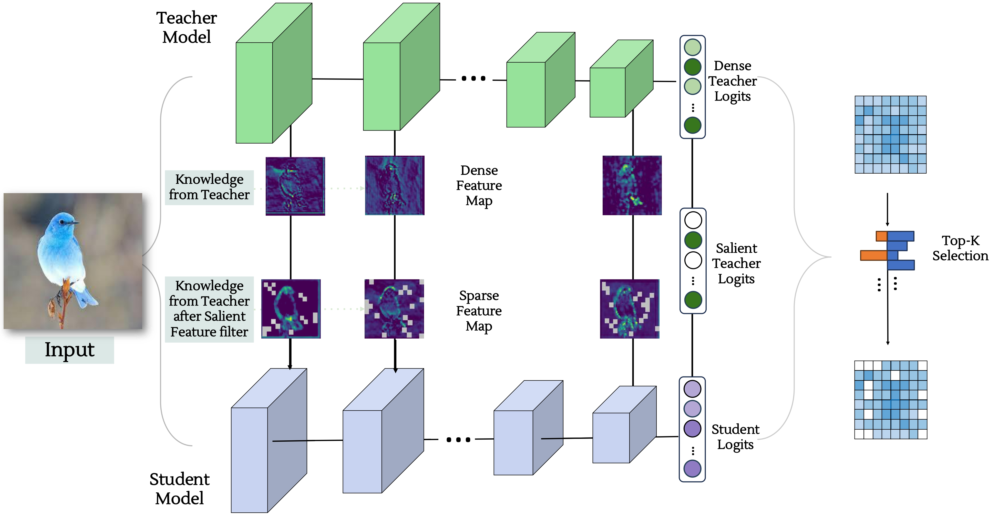 |
Efficient Knowledge Distillation via Salient Feature Masking
Assel Kembay, Skye Gunasekaran, Rui-Jie Zhu, Yu Zhang, Jason K. Eshraghian APL Machine Learning, 2026 paper / code / bibtex @article{kembay2026efficient,
title={Efficient Knowledge Distillation via Salient Feature Masking},
author={Kembay, Assel and Gunasekaran, Skye and Zhu, Rui-Jie and Zhang, Yu and Eshraghian, Jason K.},
journal={APL Machine Learning},
year={2026},
}
Masking distillation to the teacher's salient features makes knowledge transfer more efficient and improves student accuracy. |
|
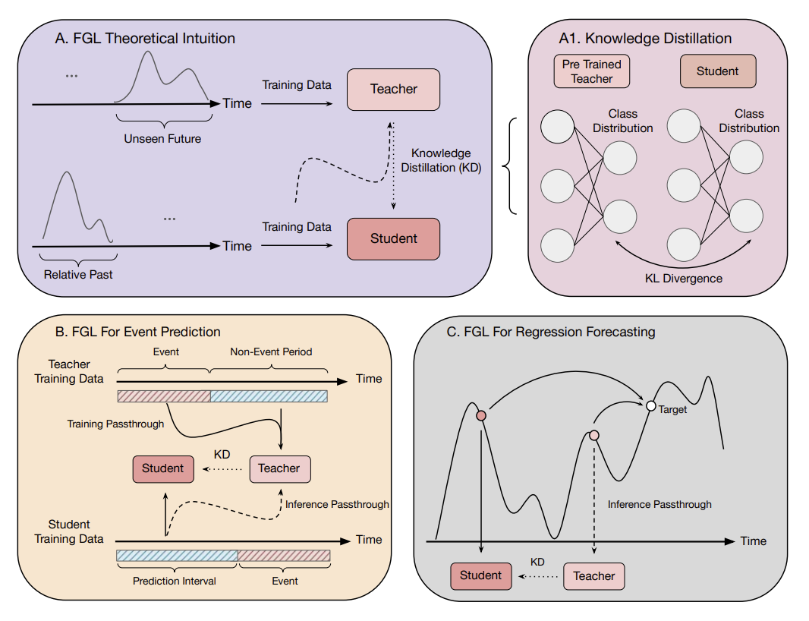 |
Future-Guided Learning: A Predictive Approach to Enhance Time-Series Forecasting
Skye Gunasekaran, Assel Kembay, Hugo Ladret, Rui-Jie Zhu, Laurent Perrinet, Omid Kavehei, Jason Eshraghian Nature Communications, 2025 paper / arXiv / code A "future-guided" model that teaches a present-time forecaster with predictive feedback improves time-series forecasting, inspired by predictive coding in the brain. |
|
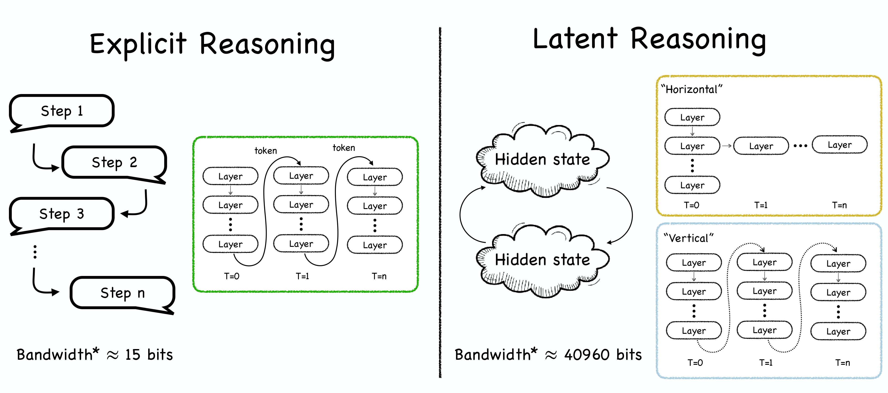 |
A Survey on Latent Reasoning
Rui-Jie Zhu, Tianhao Peng, Tianhao Cheng, Xingwei Qu, Jinfa Huang, Dawei Zhu, ..., Assel Kembay, ..., Jason Eshraghian arXiv, 2025 arXiv / code A survey of reasoning performed in models' latent space rather than in explicit chain-of-thought tokens. |
|
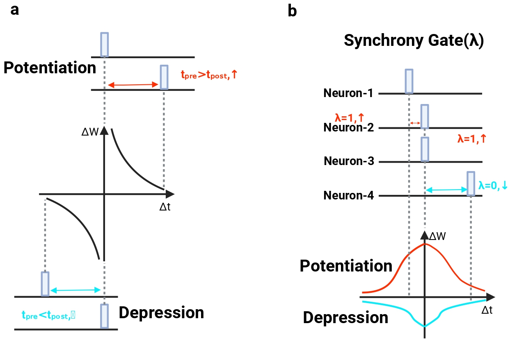 |
Learning with Spike Synchrony in Spiking Neural Networks
Yuchen Tian, Assel Kembay, Nhan Duy Truong, Jason K. Eshraghian, Omid Kavehei arXiv, 2025 arXiv / code A spike-synchrony-dependent plasticity rule that updates weights based on group-level neuron coordination rather than pairwise timing. |
|
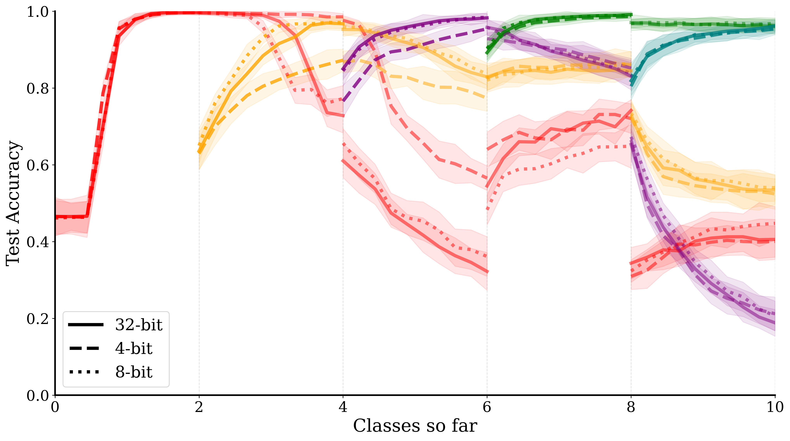 |
A Quantitative Analysis of Catastrophic Forgetting in Quantized Spiking Neural Networks
Assel Kembay*, Karina Aguilar*, Jason Eshraghian ISCAS, 2025 paper / code / bibtex @inproceedings{kembay2025quantitative,
title={A Quantitative Analysis of Catastrophic Forgetting in Quantized Spiking Neural Networks},
author={Kembay, Assel and Aguilar, Karina and Eshraghian, Jason},
booktitle={IEEE International Symposium on Circuits and Systems (ISCAS)},
year={2025},
}
Quantifying how weight quantization interacts with catastrophic forgetting in spiking neural networks under continual learning. |
|
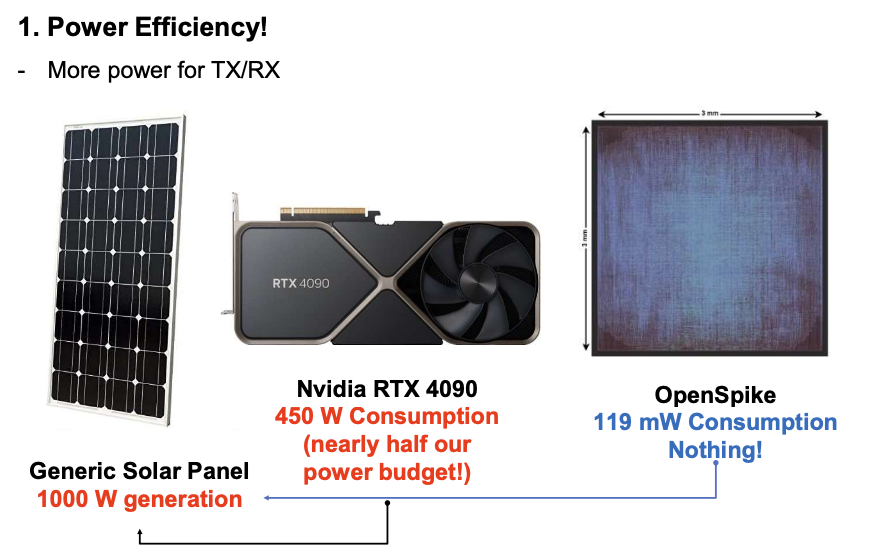 |
Leveraging Spiking Neural Networks for Solar Energy Prediction in Agriculture
Assel Kembay, Rui-Jie Zhu, Nicholas Kuipers, Jason Eshraghian, Colleen Josephson BayLearn, 2024 paper / code / bibtex @inproceedings{kembay2024agtechsnn,
title={Leveraging Spiking Neural Networks for Solar Energy Prediction in Agriculture},
author={Kembay, Assel and Zhu, Rui-Jie and Kuipers, Nicholas and Eshraghian, Jason and Josephson, Colleen},
booktitle={Bay Area Machine Learning Symposium (BayLearn)},
year={2024},
}
Energy-efficient spiking neural networks for forecasting solar energy availability on farms. |
|
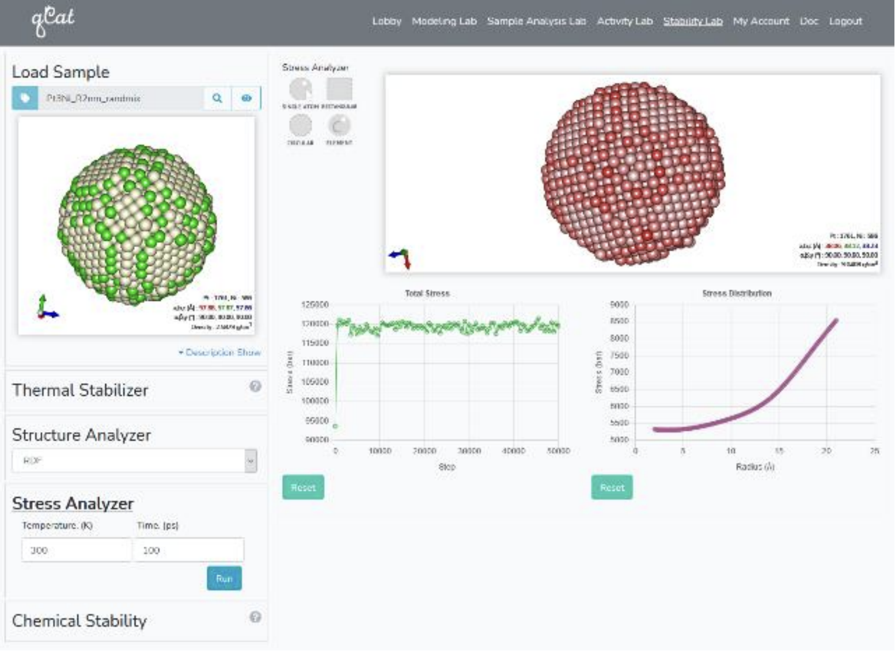 |
Simulation Web Platform for the Electro-Chemical Oxygen Reduction Reaction
Kim Sch., Lee Ch., Lee B., Seol D., Kim D., Assel Kembay, Yun K., Jang S., Lee J. International Workshop on Computational Nanotechnology (IWCN), 2021 (Oral) paper / video |
|
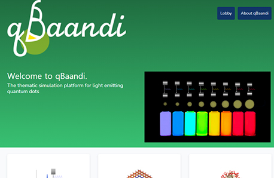 |
Web Platforms for Conventional Simulations of Matters
Kim Sch., Kim D., Assel Kembay, Kim S., Yun K., et al. Korean Physical Society Spring Meeting, 2021 (Oral) paper / video |
|
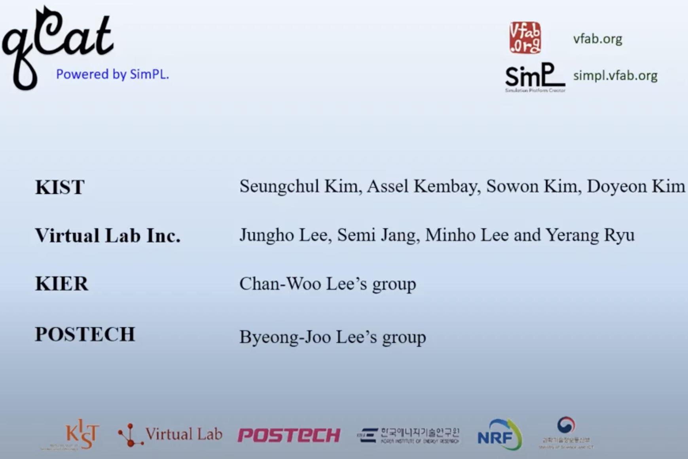 |
A Simulation Web Platform for Analyzing Electronic Structures of Semiconductors
Kim S., Assel Kembay, Lee J., et al. Korean Physical Society Spring Meeting, 2021 paper / video |
Research Experience |
|
Research Associate, Conscium — London, UK (remote)
May 2026 – Present • Mentor: Dr. Max Ward Generative modeling and optimization of mRNA sequences. |
|
|
Research Scientist Intern, AI Fund — Mountain View, CA, USA
Jan 2026 – Apr 2026 • Mentor: Dr. Andrew Ng AI systems for vision-based reinforcement learning in interactive environments. |
|
|
Graduate Student Researcher, UC Santa Cruz — Santa Cruz, CA, USA
Oct 2023 – Present • Advisor: Prof. Jason Eshraghian Knowledge distillation, continual learning, and efficient language models. |
|
|
Research Scientist Intern, Korea University Medicine — Seoul, South Korea
Apr 2023 – Sep 2023 • Mentor: Dr. Il-Joo Cho Wireless brain chip optimization and data transfer algorithms. |
|
|
|
Research Assistant, AI Research Group, KIST — Seoul, South Korea
Sep 2020 – Mar 2023 • Mentor: Dr. Suhyun Kim Data-free knowledge transfer for neuromorphic systems. |
|
|
Research Intern, Computational Science Research Center, KIST — Seoul, South Korea
Mar 2020 – Aug 2020 • Mentor: Dr. Seungchul Kim Quantum dot simulation platform development. |
Education |
|
Ph.D. in Electrical and Computer Engineering, University of California, Santa Cruz
Santa Cruz, CA, USA • 2028 (expected) • GPA: 3.95/4.00 Energy-efficient AI and brain-inspired ML • Advisor: Prof. Jason Eshraghian |
|
|
|
M.S. in AI-Robotics, Korea University of Science and Technology (KIST School)
Seoul, South Korea • GPA: 4.43/4.50 Thesis: Inversion of Spiking Neural Networks & its Application to Knowledge Distillation |
|
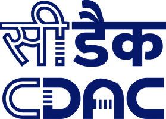 |
Postgraduate Diploma in Advanced Computing, C-DAC Advanced Computing Training School
Pune, India • Exchange student (ITEC Programme Scholarship, Government of India) |
|
B.S. in Mathematical and Computer Modeling, L.N. Gumilyov Eurasian National University
Astana, Kazakhstan • Summa cum laude (equivalent) • GPA: 3.86/4.00 |
Awards & Milestones |
| 2026 | IEEE CASS Student Travel Grant (Flagship Conferences), for APCCAS 2026, Fukuoka, Japan |
| 2026 | Advanced to Ph.D. Candidacy, UC Santa Cruz |
| 2026 | Graduate Dean's Research Travel Grant, UC Santa Cruz, USA |
| 2025 | DAC 2025 Young Fellow, Design Automation Conference, San Francisco, USA (competitive international selection) |
| 2025 | IEEE WIE Student Scholarship, International Leadership Conference, San Jose, USA |
| 2025 | Graduate Studies DEI Research & Travel Award, UC Santa Cruz, USA |
| 2023 | Divisional MIP Fellowship, UC Santa Cruz, USA (merit-based, ~$20K) |
| 2023 | POSCO Asia Fellowship, South Korea (Next Generation Global Leaders program, full funding) |
| 2021 | KIST–KT&G Global Scholarship Foundation, South Korea |
| 2020 | II Place, XV International Scientific Conference for Students and Young Scientists |
| 2019 | Sur-Place Konrad Adenauer Foundation Scholarship, Germany |
| 2018 | ITEC Programme Scholarship, Government of India (full funding) |
| 2018 | Foundation of the First President of Kazakhstan Scholarship |
Service
Conference reviewer: NeuroAI Workshop @ NeurIPS (2024); IEEE International Symposium on Circuits and Systems, ISCAS (2024–2026); IEEE BioCAS (2026).
|
MiscellaneousOutside of research, I enjoy chasing sunsets around Santa Cruz.
|
|
Design and source code from Jon Barron's website. |